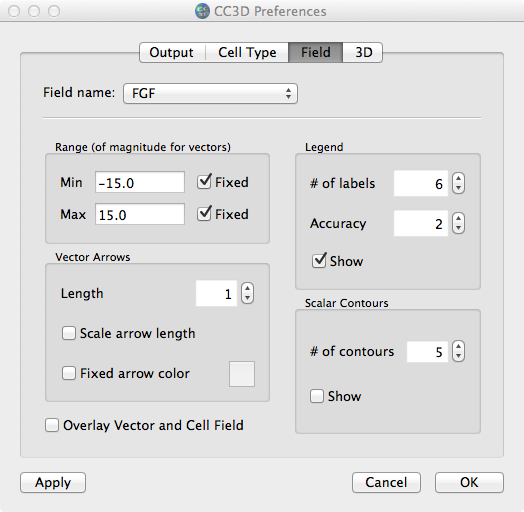

New Field prefs

The previous CC3D Preferences dialog had the tabs: Output |
Colormap | Cell Type | Vectors | 3D. As you can see, we have now
combined 'Colormap' and 'Vectors' into the single 'Field' tab. In this
new tab, there is a 'Field name' combobox that will contain the names of
all fields defined in the simulation. (Note, however, that this
combobox will not be filled in until the user begins the simulation (via
Step or Run)). This will allow for field-specific parameters. Note
that the "Vector Arrows" block applies only to vector fields and the
"Scalar Contours" applies only to scalar fields; however, neither one is
disabled when it does not apply.
Comments/ToDo...
Are there any issues with trying to use an existing (old-style) QSettings file?
Might be good to warn user to 'Apply' when selecting a different field (in combobox)
For a vector field, it's not possible to have fixed-length arrows
For a vector field, it's confusing to have 'Fixed arrow color' checked AND to Show a legend
Contour color (and other Additional colors) in Cell Type tab belong in Field tab
Want to avoid doing a getSetting for each Step/re-draw (should update attributes when Prefs updated)
For a vector field, 'Overlay Vector and Cell Field' does not work for 3D vis of cells
Might be nice if the Field tab remembered/displayed the last selected field (in the combobox)
If there are no fields defined, would be better to disable entire Field tab
Possible problems if sim #2 has same fieldnames as sim #1 and using same Prefs (QSettings) file; best to use unique
Prefs files for each sim
Why do we display the Min/Max values at the bottom of the
Player (next to the MCS #)? When displaying multiple fields, what field
does it even apply to?
Back to index